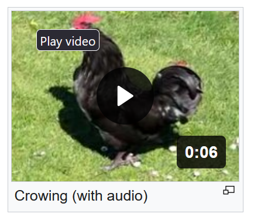
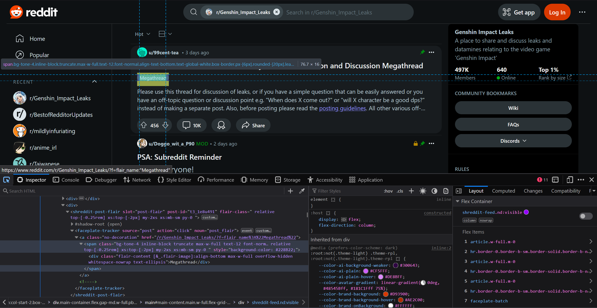

block
inline实际上"inline"在网页中独占一个block(paragraph)
"div" make a block, it can better the CSS formatting. like following pic, the img and words are combined together.
"span" make an inline block for better different style in one line words

this is
break down by
"br"
This is my citation [1]
This is some chemistry words: H2O
Combine sup and sub make a division: 1/2
"<" ♥ &
more refer to Entity Code